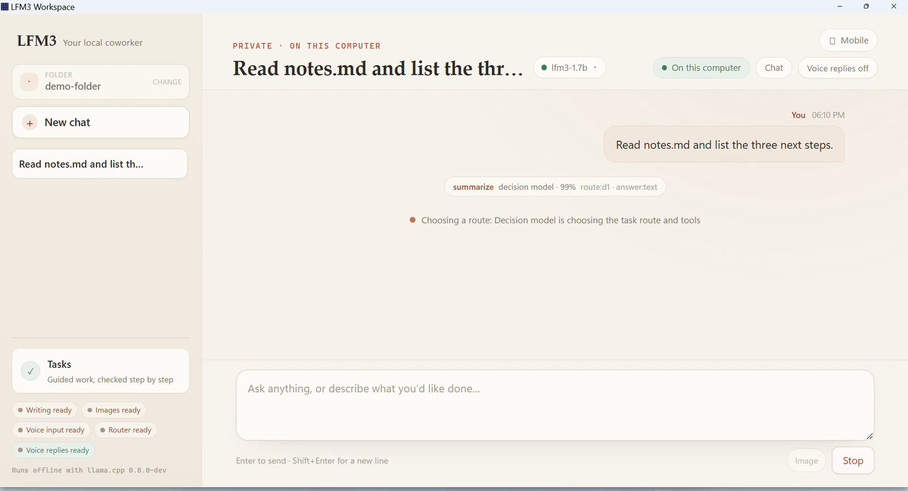

Get started
Quickstart
A first run that ends with a real file on disk, approved by you, plus a two-minute tour of the parts you will use every day.
This page takes a fresh install to a real, approved file change. It assumes Windows or a Linux desktop and about ten minutes, most of it waiting for a download.
If you have not installed the app yet, start with Install, then come back.
Before you begin#
- Disk. About 5 GB for all four model roles. The first two roles below need roughly 2.2 GB.
- Memory. 8 GB of RAM is the practical minimum for chat with the text model. More helps when vision, voice, and routing run at the same time.
- A folder to work in. Not your whole drive and not a system folder. A project folder, a notes folder, or a copy of one is ideal — the folder chip is a hard boundary for every tool.
- No GPU, no account, no key. The bundled runtime is CPU-only. Nothing asks you to sign in.
1. Install and launch#
Windows — run LFM3.Workspace_0.1.1_x64-setup.exe. The installer is not code-signed, so SmartScreen may ask you to choose More info → Run anyway. It installs per user under %LOCALAPPDATA%\LFM3 Workspace and adds a Start-menu entry.
Linux — install the Debian package or run the AppImage:
sudo apt install ./LFM3.Workspace_0.1.1_amd64.deb
lfm3-desktopchmod +x LFM3.Workspace_0.1.1_amd64.AppImage
./LFM3.Workspace_0.1.1_amd64.AppImageThe app opens on chat. On first launch it looks for the bundled llama.cpp runtime and any weights already on disk. A fresh install reports every role as Missing; that is expected.
2. Download two models#
Open Models in the chat header and click Download on these two rows:
| Role | File | Size | Why now |
|---|---|---|---|
| Text and agent | LFM3-1.7B-Q4_K_M.gguf | 1.10 GB | Plans and writes; nothing works without it |
| Decision | d1-2B-Q4_K_M.gguf | 1.10 GB | Routes turns and answers the two decision gates |
Downloads run one role at a time and show live progress with a Cancel control. Each file streams to a .part file, is checked against its published byte length and SHA-256, and only then moves into the models folder. When a download finishes while chat and jobs are idle, the role is hot-swapped in immediately.
You can add vision and voice later; chat works without them. The voice role needs both the audio GGUF and its mmproj file.
Skip the wait
The decision model is optional. Without it, the harness falls back to a calibrated keyword route and the approval flow is unchanged. Download the text role first if you want to start working sooner.
3. Choose the folder#
Click the folder chip in the chat header and pick the folder you want the harness to work in. The engine canonicalizes the path, saves it in setup.json, and shows it in the chip. Every tool call is checked against that path.
Switching folders is refused while a chat turn, a job, or a verified run is live, so an operation never changes its ground mid-flight.
4. Ask for something#
Type a request that names the work and the file you expect. Small models do better with concrete, bounded asks:
Read notes.md and write out/summary.md with a short summary of the three action items.Then press Enter. A turn streams the reply and can use up to twelve tool rounds. Watch what happens in the transcript:
- Route. The decision model classifies the request and the chosen route, its confidence, and the roles for the turn appear above the answer. Short greetings skip routing.
- Tool calls.
read_file,list_files, andsearch_filesrun immediately; their real output is shown.write_fileandedit_filedo not run yet. - Gate. Before an approval card appears, the write gate compares the proposed change with your own words. A confident mismatch is held and you see no card at all.
- Approval card. The write appears inline with its path and the exact content or diff, plus Allow once and Deny.
- Apply. Approving writes the file and returns the result to the model, which can continue the turn.
Press Stop at any point to cancel the stream and any pending approval.


- The folderEvery path in this turn is resolved against it. The transcript header repeats the first message.
- Your requestSent as one message. The turn cannot be edited after this point; send a new one or press Stop.
- Route decisionIntent, confidence, and the roles chosen for the turn, printed before the answer.
- Current stepA live line of what the harness is doing, replaced as the turn advances.
- StopCancels the stream and any pending approval for this turn.
5. Approve the diff#
Read the card the way you would read a patch. It shows the full path inside your folder and the exact bytes that will be written.
- Allow once executes that one action and nothing else. The next write needs its own approval.
- Deny leaves the file untouched and tells the model not to retry the same change.
Pending cards expire after ten minutes, and decisions are stored with the transcript so a restart does not resurrect a stale approval. More detail, including what the harness refuses before you ever see a card, is in Approvals and safety.
6. Where your work landed#
Chat turns are bounded and the model can stop before finishing. Check the actual file:
Windows (PowerShell)
Get-Content .\out\summary.mdLinux
cat out/summary.mdEverything the app knows lives in the trusted data directory, not in the folder you chose:
| What | Windows | Linux |
|---|---|---|
| Chat transcripts | %LOCALAPPDATA%\LFM3Harness\chat.db | $XDG_DATA_HOME/LFM3Harness/chat.db |
| Verified-run journal | %LOCALAPPDATA%\LFM3Harness\runs.db | $XDG_DATA_HOME/LFM3Harness/runs.db |
| Jobs | %LOCALAPPDATA%\LFM3Harness\jobs.db | $XDG_DATA_HOME/LFM3Harness/jobs.db |
| Weights | %LOCALAPPDATA%\LFM3Harness\models | $XDG_DATA_HOME/LFM3Harness/models |
| Settings | %LOCALAPPDATA%\LFM3Harness\setup.json | $XDG_DATA_HOME/LFM3Harness/setup.json |
The only thing written into your chosen folder is what you approved, plus .attachments/ when you attach an image or recording.
7. Try the other surfaces#
Once the basics work, these are the next two things worth knowing:
- Voice in and out. Click the microphone to dictate; the clip is resampled to 16 kHz mono WAV and transcribed locally into the composer for you to edit before sending. Speak on any answer, or the header Voice replies toggle, reads replies aloud through
llama-tts. Both need the audio role and itsmmproj. - Jobs. The Describe a job form runs the same engine as an open-ended loop: the model keeps its own todo list with a check per step, and
finishis refused until the required output exists on disk. See Jobs.
If you need machine-checked output rather than a conversation, use Verified tasks instead. They are a stricter path with a frozen acceptance contract.
If something is wrong#
- A role still says Missing after a download: open the Models menu and choose Reload installed models.
- Chat says the model is unavailable: run
lfm3 doctor --probe-models(see CLI reference) or check the port in Troubleshooting. - Text lands in the composer but the microphone never records: the app needs microphone permission from the operating system the first time.
- A job stops with
turn_budgetorstalled: that is the harness refusing to call an unfinished loop a success. Narrow the goal and try again; Jobs explains each status.